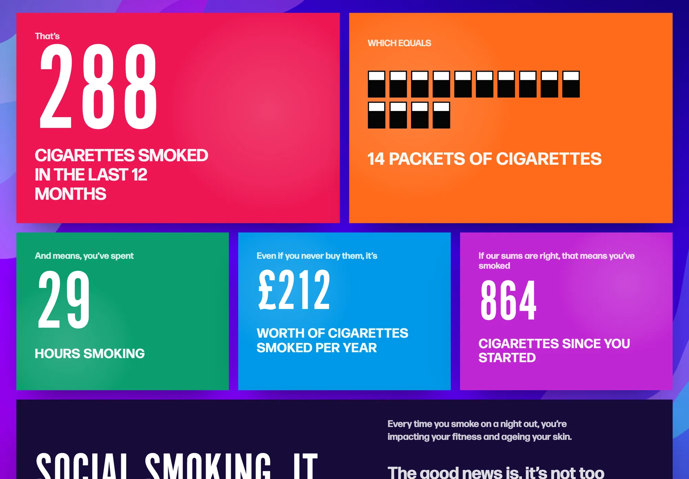

A one-minute calculator that shows people what “only socially” adds up to over a year. I had a prototype running the day it was pitched. Then I designed the flow, built the live app and reported on the results for Smoking Ends Here.

The idea
Social smokers don’t think of themselves as smokers. Snapshot doesn’t argue with them. It adds up their nights out and shows them the year.
Pick the pattern that sounds like you, move a few sliders, and see your year in cigarettes, packets, hours and money. Then three quick questions about how that felt. It ran on phones from paid social and on iPads at events.
The prototype, the user journey and the question flow, the build, the live dashboard and the final report. Aleks designed the look and Kelly wrote the copy. I built to Aleks’s design and changed the flow when it was losing people.
975 uses by 29 August, 60% of them in the final two weeks. Half the people who answered said it made them want to smoke less, and 121 said they wouldn’t smoke the next time they had the chance.
The whole thing on a phone. At events it ran the same way on an iPad.
1
I only smoke socially. I don’t smoke every day. I only smoke a few a day. Nobody has to call themselves a smoker to start.
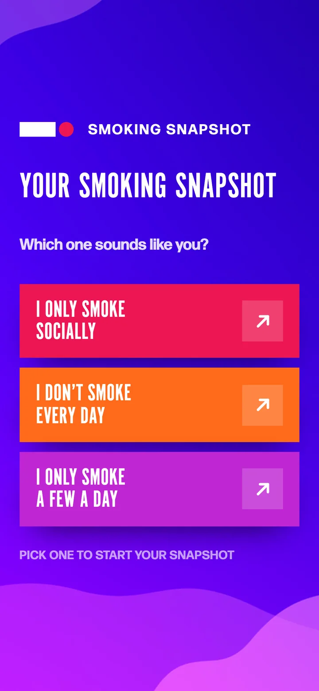
2
The social route asks three things: cigarettes on a night out, nights out a month and years. The other routes add weekdays. Every slider starts at zero, so nobody gets a number they didn’t give.
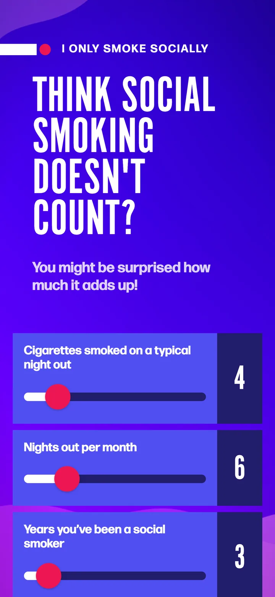
3
The big number comes first, then packets, hours, money and a lifetime total. “Even if you never buy them, it’s £212.”
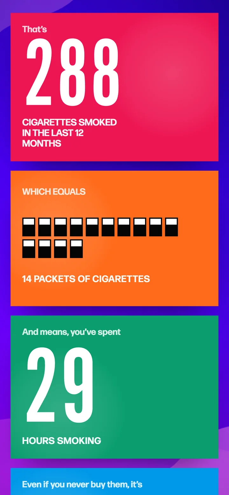
4
Three reaction questions, one per screen, one tap each. Then a few optional ones about you. They sit straight under the result, so carrying on is just a scroll.
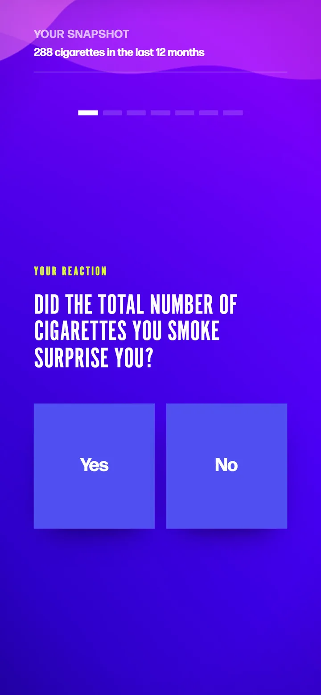
14 May
The idea came out of a team brainstorm. Someone suggested a Spotify Wrapped for smoking, and the note from the room was that the big number should be a shock. I had a working prototype by that evening.
It was called Smoking Wrapped, and it led with borrowed cigarettes, the ones social smokers take from friends and never count. One slider asked how many were borrowed. A toggle asked whether you’d call yourself a smoker, and if you said no, the result answered back. “You said no. Your year says otherwise.”
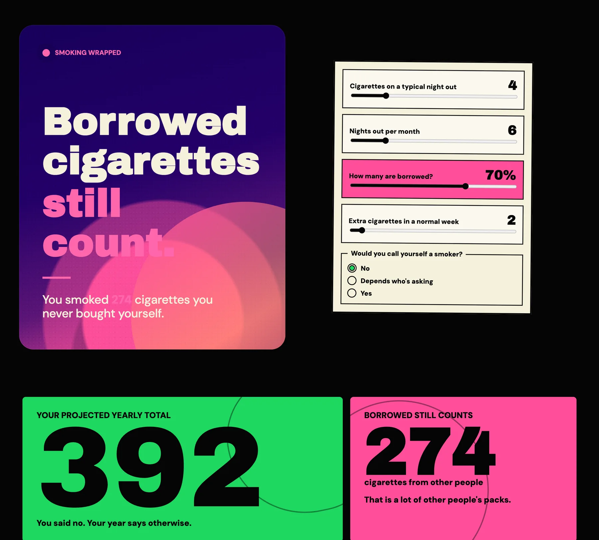
Borrowed cigarettes didn’t make it past the first review. The yearly total as the shock stayed in every version after.
22 to 27 May
When the team asked for it for real, I wrote the production plan: hosting, a database for the answers, the domain and a note that “Smoking Wrapped” was a prototype name, not a campaign one. It became Smoking Snapshot in July.
Then I wrote the user journey. Two routes, one for social smokers and one for light smokers, each asking only the questions that fit, with the same result cards at the end.
The biggest decision was the ending. Products like Wrapped end with a share card. The journey I wrote kept the result private. On venue iPads, a QR code gives people a way to carry on with support on their own phone.
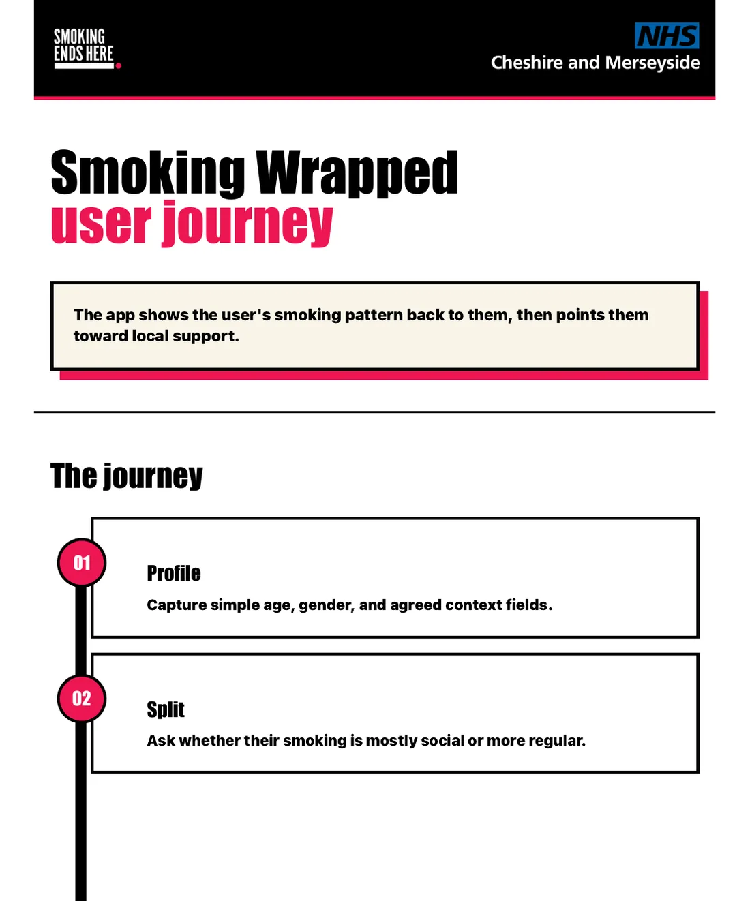
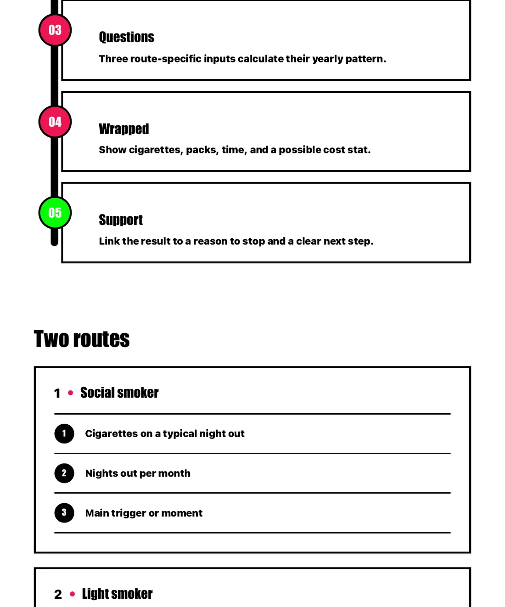
June
Aleks’s design arrived on 9 June, with purple waves, tall condensed type and a colour card for every number. I rebuilt the app to match it, and it went live on 24 June.
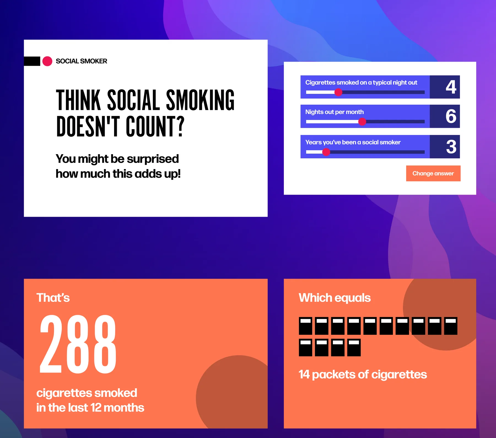
The mockup put every question on one form after the result, with the questions about you first and the reaction last. On a phone, that’s a long form after the part people came for. So I split it into one question per screen, one tap each. In July I moved the three reaction questions to the front, while the number was still sinking in.
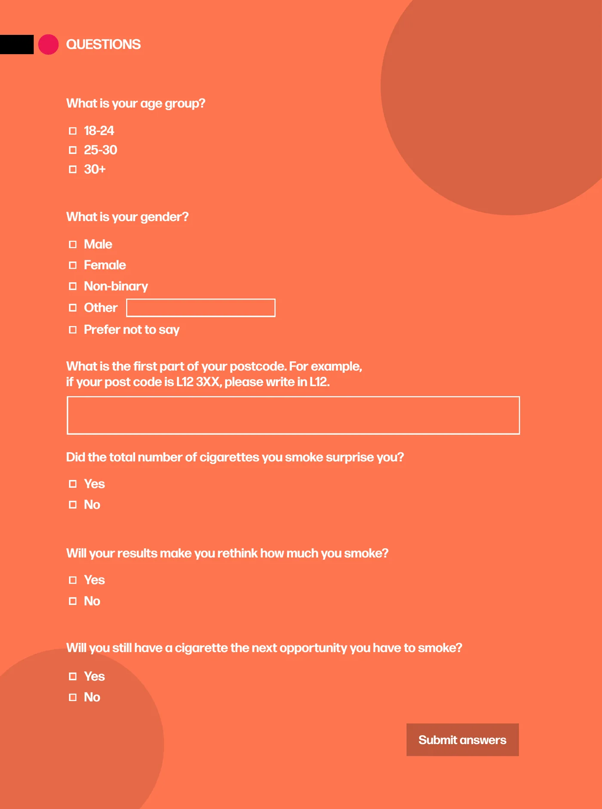
20 to 24 July
Five days before Pride, I found out the campaign iPads were on iOS 12, from 2019. Its Safari doesn’t understand clamp(), which the layout used for nearly every size, so the screens broke. I added a fallback for all 156 uses and fixed tap to advance for the older browser.
Then I made it ready for Saturday. Answers save on the iPad first and upload when the signal comes back. The app keeps working offline once it has loaded. Done resets it for the next person. Touch targets went up to 44 pixels, and hover effects that stuck on touchscreens came out.
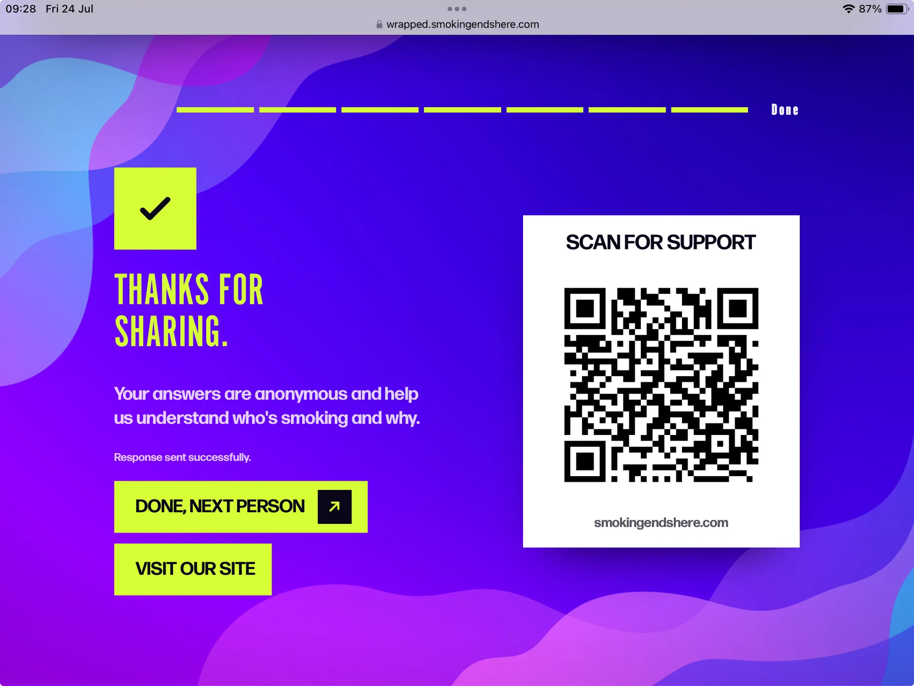
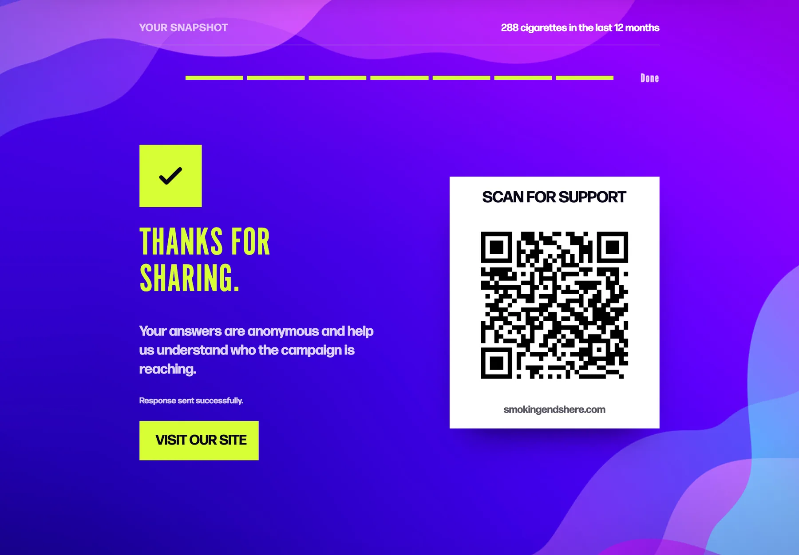
Checked before the first event
25 July to 23 August
The team took Snapshot to Liverpool Pride on 25 July, the Wirral Food Festival the day after and Warrington Wolves on 23 August, with iPads at each.
At Pride, 88 people went all the way through, nearly all of them on the iPads. Every one of them answered every question, because at that point a use only saved at the end. That’s nearly a tenth of the campaign, in one day. The next eleven days brought 81.
25 July to 29 August
| Date | Snapshots |
|---|
Warrington Wolves fell in the campaign’s busiest week, 413 uses in seven days, and by then paid social was doing most of the work. 64 of that day’s 83 came through Instagram. The events put Snapshot in front of people face to face, and the ads took it to everyone else.
28 July to 11 August
After Pride, I suspected people were leaving before the last question. The app saved once, after question seven, so anyone who stopped earlier left no trace. Their sliders, their result and their reactions all went with them.
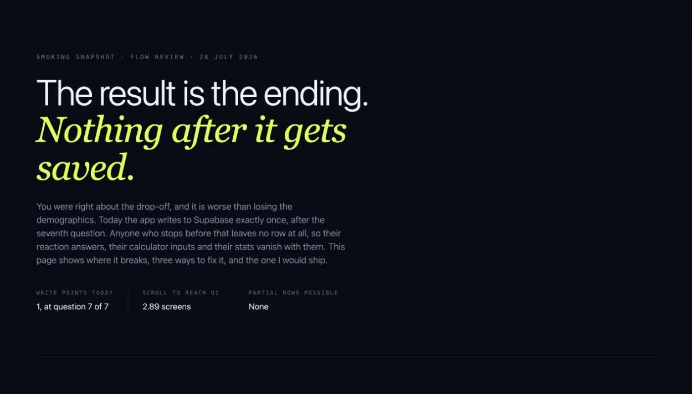
I tested three layouts at phone and iPad sizes. A long page with all seven questions under the result. A permission screen before the first question. And a split that asks the three reactions first, saves, then offers the rest as optional. The split was easiest. It shows 1 of 3 instead of 1 of 7, and each reaction takes one tap. The client wanted a big engagement number on those three questions, so the order suited them too.
The save after the reactions went live on 6 August.
6 to 11 August
55 responses kept, not 25
Saving only at the end would have kept 25 of them. So on 11 August I moved the first save to the moment someone taps “Show my Smoking Snapshot”, before any question at all.
Every figure here comes from the campaign’s own data, with the number of people behind each percentage. The answers were optional, so each question has its own base.
The events figure counts visits with no referrer. That’s how the iPads and QR codes show up, along with anyone who typed the address in.
Instagram brought 61% of uses and events brought 22%. Clicks didn’t turn into uses evenly. Snapchat sent 13,498 clicks and 57 uses. Instagram turned clicks into uses about six times as often as Snapchat did.
| Channel | Clicks | Uses | Uses per click |
|---|---|---|---|
| 22,476 | 593 | 2.64% | |
| TikTok | 5,930 | 61 | 1.03% |
| Snapchat | 13,498 | 57 | 0.42% |
| All three | 41,904 | 711 | 1.70% |
Clicks aren’t unique visitors, so read uses per click as a comparison, not a conversion rate.
50%
said it made them want to smoke less
261 of 519 who answered
46%
were surprised by their total
240 of 520 who answered
23%
said they wouldn’t smoke the next time they had the chance
121 of 518 who answered
It moved thinking further than behaviour. Half the people who answered thought again. Fewer than one in four meant to act on it at the next chance. That gap is the brief for the next version.
The people it was built for found it. Young social smokers were the largest group on both counts.
August and September
I built a live dashboard for the team. It refreshes every minute, and it has a read-only feed an AI agent uses to update the campaign slide, so updates came straight from the data.
Then I wrote the final report, in September. Eleven slides on what happened, what changed and what to do next, with every percentage next to the number of people it’s based on.
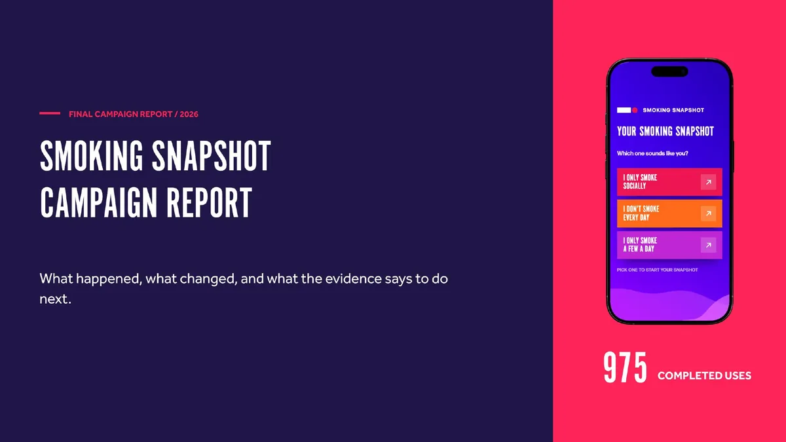
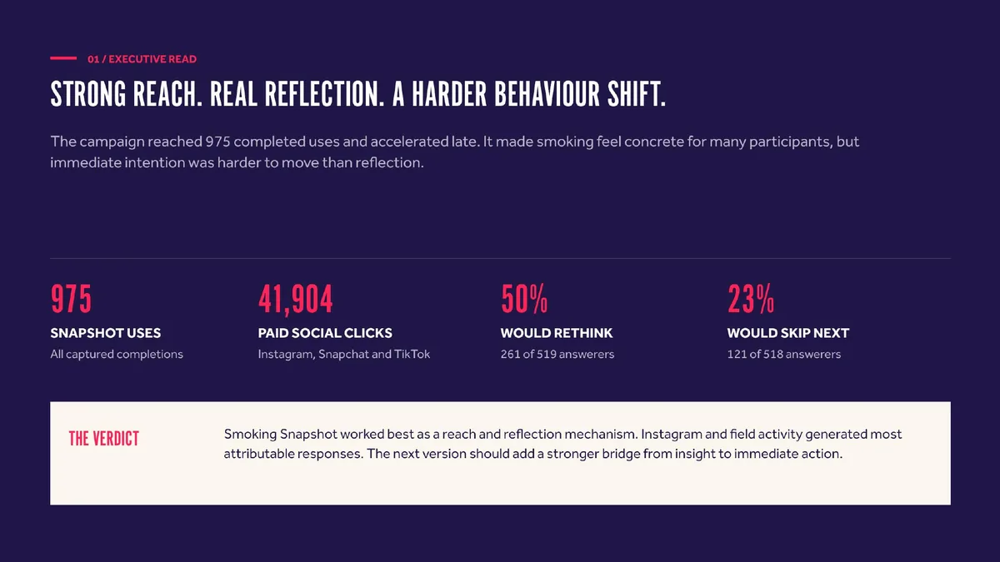
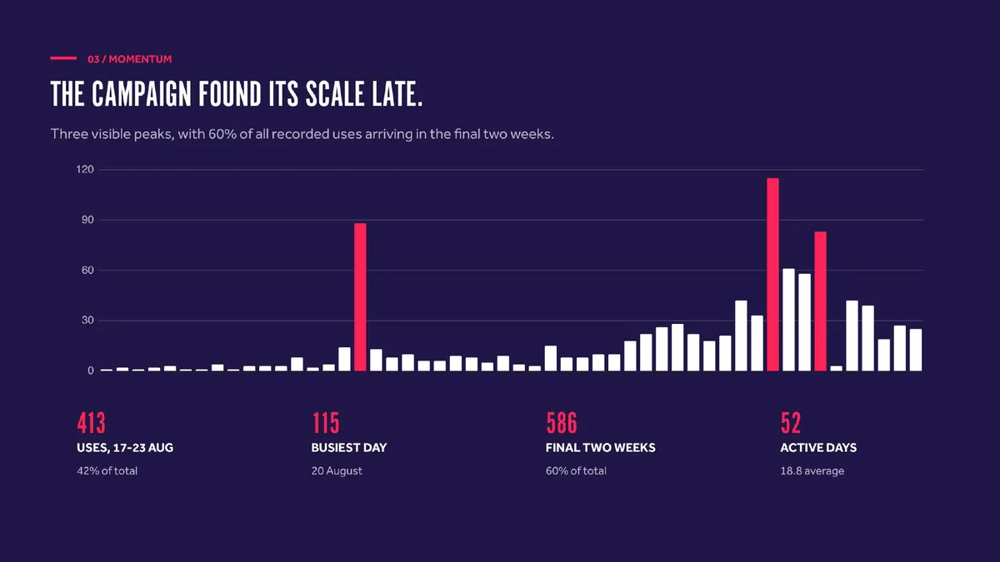
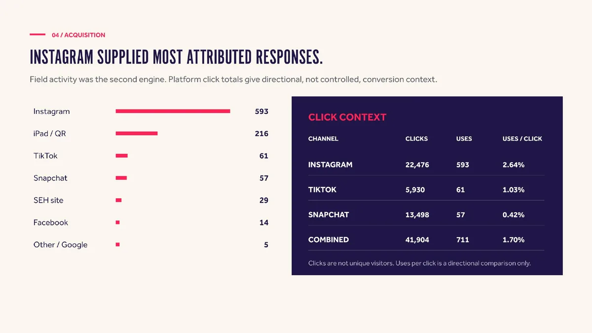
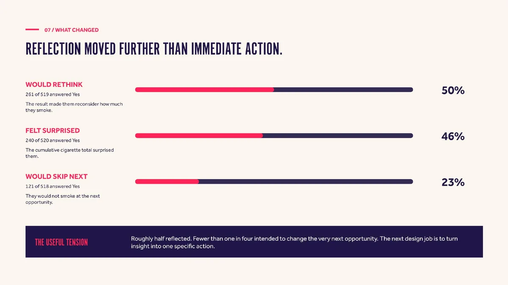
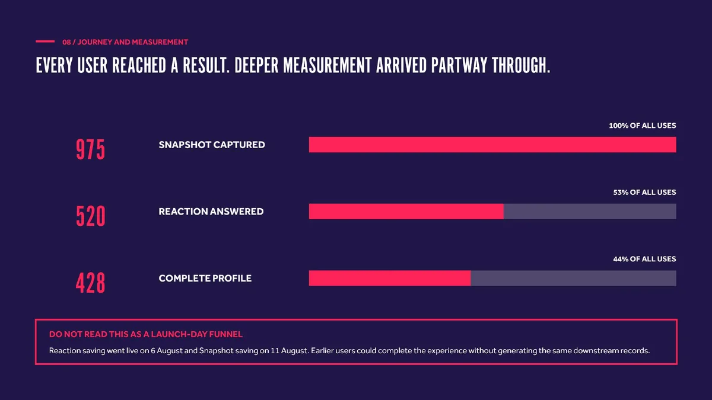
Kept running while it was live
A working link on day one made for a better conversation than any brief, even though most of it was thrown away.
A form that saves at the end only counts the people who finish. Saving at the result counted everyone who got that far.
I found the iOS 12 problem five days before Pride. Next time I’ll ask for the event hardware on the first day.
People reflected more than they committed. The next version should end with one specific thing to commit to, and measure whether people do it.
Next project
Paid media reporting that explains itself. Clients get a plain-English read of what changed, why it matters and what happens next.